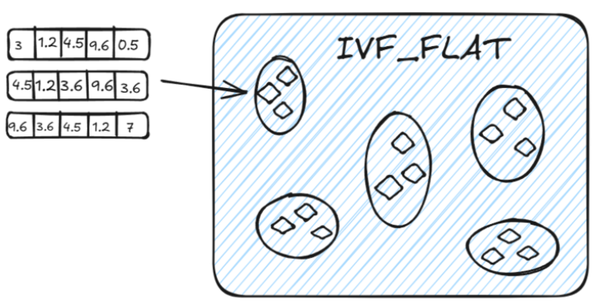
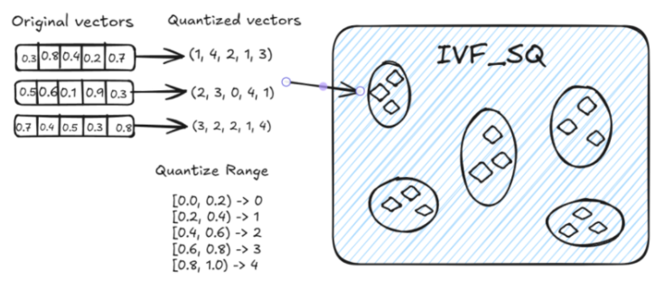

工程实践提示：示例中的模型地址、数据库账号和密钥均应通过环境变量或独立配置文件注入；部署前还需补充权限控制、输入校验、超时重试、日志脱敏、来源引用与离线评估。
学习目标
- 理解什么是向量数据库
- 理解Milvus和MySQL的区别和联系
- 掌握Milvus数据库的增删改查
1 什么是 Milvus 向量数据库？
Milvus 是一款开源的向量数据库（2019年提出），其唯一目标是存储、索引和管理由深度神经网络和其他机器学习（ML）模型生成的大规模嵌入向量。
作为一个专门设计用于处理输入向量查询的数据库，它能够处理万亿级别的向量索引。与现有的关系型数据库主要处理遵循预定义模式的结构化数据不同，Milvus 从底层设计用于处理从非结构化数据转换而来的嵌入向量。
随着互联网的发展和演变，非结构化数据变得越来越常见，包括电子邮件、论文、物联网传感器数据、Facebook 照片、蛋白质结构等等。为了使计算机能够理解和处理非结构化数据，使用嵌入技术将它们转换为向量。Milvus 存储和索引这些向量。Milvus 能够通过计算它们的相似距离来分析两个向量之间的相关性。如果两个嵌入向量非常相似，则意味着原始数据源也很相似。
2 关键概念
2.1 非结构化数据
非结构化数据包括图像、视频、音频和自然语言等信息，这些信息不遵循预定义的模型或组织方式。这种数据类型占据了世界数据的约 80%，可以使用各种人工智能（AI）和机器学习（ML）模型将其转换为向量。
2.2 嵌入向量
嵌入向量是对非结构化数据（如电子邮件、物联网传感器数据、Instagram 照片、蛋白质结构等）的特征抽象。数学上，嵌入向量是一个浮点数或二进制数的数组。现代的嵌入技术被用于将非结构化数据转换为嵌入向量。
2.3 向量相似度搜索
向量相似度搜索是将向量与数据库进行比较，以找到与查询向量最相似的向量的过程。使用近似最近邻搜索算法加速搜索过程。如果两个嵌入向量非常相似，那么原始数据源也是相似的。
2.4 Collection 和 Field
与传统数据库引擎类似，您也可以在 Milvus 中创建数据库，并为某些用户分配权限来管理它们。那么这些用户就有权管理数据库中的集合。一个 Milvus 集群最多支持 64 个数据库.
在关系数据库中，表和字段的结构可以与Milvus中的Collection和Field进行对应：
| Milvus | 关系数据库 | 描述 |
|---|---|---|
| Collection | 表 | 集合相当于关系数据库中的表，用于组织数据 |
| Field | 字段 | 字段Schema相当于表中的列 |
| is_primary | 主键 | 在Field Schema中标记为主键对应该列的主键 |
| dtype | 数据类型 | 字段的数据类型，如INT, VARCHAR等 |
| max_length | 最大长度 | 对应VARCHAR类型字段的最大字符数 |
| dim | - | 向量字段的维度没有直接对应，但可以视为特殊数据处理 |
注意：1个collection最多支持4个向量Field
2.4.1 Field schema
Field schema 是字段的逻辑定义。我们在定义集合架构和管理集合之前需要定义的第一件事就是定义 Field schema。
Milvus 集合中仅支持一个主键字段。
| 属性 | 描述 | 备注 |
|---|---|---|
name |
要创建的集合中的字段名称 | String，必填 |
dtype |
字段的数据类型 | 必填 |
description |
字段描述 | String，选填 |
is_primary |
是否设置该字段为主键字段 | Boolean (true or false) 主键字段必填 |
auto_id（主键字段必填） |
切换以启用或禁用自动 ID（主键）分配 | True或False |
max_length（VARCHAR 字段必需） |
允许插入的字符串的最大长度。 | [1, 65,535] |
dim |
向量的维数 | ∈[1, 32768] |
is_partition_key |
该字段是否是分区键字段 | 布尔值（true 或 false） |
2.4.2 collection schema
collection schema 是 collection 的逻辑定义。我们需要在定义 collection schema 之前定义 field schema。
| 属性 | 描述 | 备注 |
|---|---|---|
field |
集合中要创建的字段 | 必填 |
description |
集合描述 | String,选填 |
partition_key_field |
设计用作分区键的字段的名称。 | String， 选填 |
enable_dynamic_field |
是否启用动态模式 | Boolean (true or false) |
3 为什么选择 Milvus？
- 在处理大规模数据集的向量搜索时具有高性能。
- 开发者优先的社区，提供多语言支持和工具链。
- 云扩展性和高可靠性，即使出现故障也不会受到影响。
- 通过将标量过滤与向量相似度搜索配对，实现混合搜索。
4 支持哪些索引和度量？
索引是数据的组织单位。在搜索或查询插入的实体之前，必须声明索引类型和相似度度量。如果您未指定索引类型，则 Milvus 将默认使用暴力搜索。
4.1 索引类型
大多数由 Milvus 支持的向量索引类型使用近似最近邻搜索（ANNS），包括：
-
FLAT：FLAT最适合在小型、百万级数据集上寻求完全准确和精确搜索结果的场景。
- 这是最简单的索引方式，进行暴力搜索（brute-force），可以保证精确度，但效率低，尤其在数据量大时。适合场景：在小型、百万级数据集上寻求完全精确的搜索结果。
-
IVF_FLAT： 是一种基于倒排的索引方法，广泛用于在大规模数据集上实现高效的近似最近邻搜索。它适用于在精度和查询速度之间寻求平衡的场景。

1. 聚类 ：IVF_FLAT通过聚类算法（如k-means）将高维空间中的向量划分为多个子空间（簇）。每个簇包含一组相似的向量，并且每个簇会有一个代表向量，通常是簇的中心点。
2. 倒排索引 ：为每个簇创建倒排索引。每个向量会被映射到它所属的簇，这样在查询时，系统只需关注与查询向量相似的簇，而不需要搜索整个高维空间，从而显著降低搜索的时间复杂度。
3. 查询处理 ：
- 查询时，IVF_FLAT首先将查询向量分配到距离最近的簇中心（即子空间）。
- 然后在该簇内执行精确的线性搜索，从而查找与查询向量相似的向量。
- 为了优化查询，IVF_FLAT使用一个参数
nprobe来控制搜索的簇数。nprobe控制搜索时考虑的簇的数量，从而平衡查询精度和查询速度：
- 增大
nprobe可以搜索更多簇，返回更多候选向量，提高结果的精确度，但查询时间也会增加。减少nprobe可以缩小搜索范围，降低计算时间，查询速度更快，但可能会牺牲一些精度
-
IVF_SQ8：是在 IVF_FLAT 基础上增加了量化步骤的一种索引方法，其核心思想与 IVF_FLAT 类似；IVF_SQ8通过 标量量化 （Scalar Quantization）将每个维度的 4 字节浮点数表示压缩为 1 字节整数表示。

-
IVF_PQ：是一种高效的向量索引方式，结合了倒排文件索引和乘积量化（Product Quantization）技术，旨在加速大规模高维数据集的检索。
- 倒排文件索引：IVF_PQ首先将数据集划分为多个簇，每个簇由一个聚类中心表示。查询时，系统首先计算查询向量与这些聚类中心的距离，选择最接近的几个簇进行详细搜索，从而减少计算量。
- 乘积量化：在每个簇内，向量被进一步量化为多个子向量，这些子向量通过独立的量化过程进行编码。这样可以显著降低存储需求，并加快相似度计算。
- 存储与速度：IVF_PQ通过减少存储空间的占用，同时保持较高的查询速度和准确性，适用于处理大规模高维向量数据。
- HNSW：HNSW是基于图的索引，最适合对搜索效率有高要求的场景。
请参阅向量索引以了解更多详细信息。
4.2 相似度度量
在 Milvus 中，相似度度量用于衡量向量之间的相似性。选择一个好的距离度量方法可以显著提高分类和聚类的性能。根据输入数据的形式，选择特定的相似度度量方法可以获得最优的性能。
对于浮点嵌入，通常使用以下指标：
- 欧几里得距离（L2）
- 内积（IP）
- 余弦相似度 (COSINE)
5 Milvus数据库操作
在次项目中，我们使用 Milvus Lite，它是pymilvus 中包含的一个 python 库，可以嵌入到客户端应用程序中。Milvus 还支持在Docker和Kubernetes上部署，适用于生产用例。
开始之前，请确保本地环境中有 Python 3.8+ 可用。安装pymilvus ，其中包含 python 客户端库和 Milvus Lite：
pip install pymilvus
5.1 设置向量数据库
要创建本地的 Milvus 向量数据库，只需实例化一个MilvusClient ，指定一个存储所有数据的文件名，如 "milvus_demo.db"。
# 1 数据库的操作 def operate_db(): # 如果uri为数据库名称路径，代表本地操作数据库 client = MilvusClient(uri="milvus_demo.db") # 如果uri为链接地址，代表Milvus属于单机服务，需要开启Milvus后台服务操作 # client = MilvusClient(uri="http://localhost:19530") # # # 创建名称为milvus_demo的数据库 # # # databases = client.list_databases() # if "milvus_demo" not in databases: # client.create_database(db_name="milvus_demo") # else: # client.using_database(db_name="milvus_demo") return client
5.2 Collections操作
在 Milvus 中，我们需要一个 Collections 来存储向量及其相关元数据。你可以把它想象成传统 SQL 数据库中的表格。创建 Collections 时，可以定义 Schema 和索引参数来配置向量规格，如维度、索引类型和远距离度量。此外，还有一些复杂的概念来优化索引以提高向量搜索性能。
# 2 collection集合的操作 def operate_table(): # 定义schema ## 注意：在定义集合 Schema 时，enable_dynamic_field=True 使得您可以插入未定义的字段。一般动态字段以 JSON 格式存储，通常命名为 $meta。在插入数据时，所有未定义的字段及其值将被保存为键值对。 ## 在定义集合 Schema 时，auto_id=True 可以对主键自动增长id。 schema = client.create_schema(auto_id=False, enable_dynamic_field=True) # # schema添加字段id, vector schema.add_field(field_name='id', datatype=DataType.INT64, is_primary=True) schema.add_field(field_name='vector', datatype=DataType.FLOAT_VECTOR, dim=5) schema.add_field(field_name='scalar1', datatype=DataType.VARCHAR, max_length=256, description='标量字段') # # 创建集合 client.create_collection(collection_name='demo_v1', schema=schema) # # 设置索引 index_params = client.prepare_index_params() # # 在向量字段vector上面添加一个索引； # index_type='', # 留空以使用自动索引 # 对于向量字段，常见的默认索引类型包括IVF_FLAT或HNSW等，具体取决于数据的特性和查询需求。 # 对于标量字段，常见的默认索引可能是INVERTED等。 index_params.add_index(field_name='vector', metric_type="COSINE", index_type='', index_name="vector_index") client.create_index(collection_name='demo_v1', index_params=index_params) # # # 查看索引信息 res = client.list_indexes(collection_name='demo_v1') print(f'索引信息--》{res}') res = client.describe_index(collection_name='demo_v1', index_name='vector_index') print(f'指定索引详细信息-->{res}') # 查看索引状态 # client.load_collection(collection_name='demo_v1') # print(client.get_load_state(collection_name='demo_v1')) # 如果不需要索引，可以删除相关索引 # client.release_collection(collection_name='demo_v1') # client.drop_index(collection_name='demo_v1', index_name='vector_index') # # 检索标量字段 index_params1 = client.prepare_index_params() index_params1.add_index(field_name='scalar1', index_type='', index_name='default_index') client.create_index(collection_name='demo_v1', index_params=index_params1) # # # # # 查看索引信息 res = client.list_indexes(collection_name='demo_v1') print(f'索引信息--》{res}') # res = client.describe_index(collection_name='demo_v1', index_name='vector_index') print(f'指定索引详细信息-->{res}')
5.3 Entity实体数据操作
在 Milvus 中，实体**指的是**Collections**中共享相同**Schema 的数据记录，行中每个字段的数据构成一个实体。因此，同一 Collections 中的实体具有相同的属性（如字段名称、数据类型和其他约束）。
5.3.1数据的增、删、改
def operate_entity(): # # todo:1. 创建集合collection # 这种方式: collection 只包括两个字段. id 作为主键， vector 作为向量字段，以及自动设置 auto_id、enable_dynamic_field 为 True # auto_id 启用此设置可确保主键自动递增。在数据插入期间无需手动提供主键。 # enable_dynamic_field 启用后，要插入的数据中除 id 和 vector 之外的所有字段都将被视为动态字段。 # # 这些附加字段作为键值对保存在名为 $meta 的特殊字段中。此功能允许在数据插入期间包含额外的字段。 # client.create_collection(collection_name='demo_v2', dimension=5, metric_type='IP') # # # todo:2. 插入数据（也叫实体） data = [ {"id": 0, "vector": [0.3580376395471989, -0.6023495712049978, 0.18414012509913835, -0.26286205330961354, 0.9029438446296592], "color": "pink_8682"}, {"id": 1, "vector": [0.19886812562848388, 0.06023560599112088, 0.6976963061752597, 0.2614474506242501, 0.838729485096104], "color": "red_7025"}, {"id": 2, "vector": [0.43742130801983836, -0.5597502546264526, 0.6457887650909682, 0.7894058910881185, 0.20785793220625592], "color": "orange_6781"}, {"id": 3, "vector": [0.3172005263489739, 0.9719044792798428, -0.36981146090600725, -0.4860894583077995, 0.95791889146345], "color": "pink_9298"}, {"id": 4, "vector": [0.4452349528804562, -0.8757026943054742, 0.8220779437047674, 0.46406290649483184, 0.30337481143159106], "color": "red_4794"}, {"id": 5, "vector": [0.985825131989184, -0.8144651566660419, 0.6299267002202009, 0.1206906911183383, -0.1446277761879955], "color": "yellow_4222"}, {"id": 6, "vector": [0.8371977790571115, -0.015764369584852833, -0.31062937026679327, -0.562666951622192, -0.8984947637863987], "color": "red_9392"}, {"id": 7, "vector": [-0.33445148015177995, -0.2567135004164067, 0.8987539745369246, 0.9402995886420709, 0.5378064918413052], "color": "grey_8510"}, {"id": 8, "vector": [0.39524717779832685, 0.4000257286739164, -0.5890507376891594, -0.8650502298996872, -0.6140360785406336], "color": "white_9381"}, {"id": 9, "vector": [0.5718280481994695, 0.24070317428066512, -0.3737913482606834, -0.06726932177492717, -0.6980531615588608], "color": "purple_4976"} ] res = client.insert(collection_name='demo_v2', data=data) # print(res) ## todo:2.1 将数据插入到特定分区，可以在插入请求中指定分区名称，如下所示： data = [ {"id": 10, "vector": [-0.5570353903748935, -0.8997887893201304, -0.7123782431855732, -0.6298990746450119, 0.6699215060604258], "color": "red_1202"}, {"id": 11, "vector": [0.6319019033373907, 0.6821488267878275, 0.8552303045704168, 0.36929791364943054, -0.14152860714878068], "color": "blue_4150"}, {"id": 12, "vector": [0.9483947484855766, -0.32294203351925344, 0.9759290319978025, 0.8262982148666174, -0.8351194181285713], "color": "orange_4590"}, {"id": 13, "vector": [-0.5449109892498731, 0.043511240563786524, -0.25105249484790804, -0.012030655265886425, -0.0010987671273892108], "color": "pink_9619"}, {"id": 14, "vector": [0.6603339372951424, -0.10866551787442225, -0.9435597754324891, 0.8230244263466688, -0.7986720938400362], "color": "orange_4863"}, {"id": 15, "vector": [-0.8825129181091456, -0.9204557711667729, -0.935350065513425, 0.5484069690287079, 0.24448151140671204], "color": "orange_7984"}, {"id": 16, "vector": [0.6285586391568163, 0.5389064528263487, -0.3163366239905099, 0.22036279378888013, 0.15077052220816167], "color": "blue_9010"}, {"id": 17, "vector": [-0.20151825016059233, -0.905239387635804, 0.6749305353372479, -0.7324272081377843, -0.33007998971889263], "color": "blue_4521"}, {"id": 18, "vector": [0.2432286610792349, 0.01785636564206139, -0.651356982731391, -0.35848148851027895, -0.7387383128324057], "color": "orange_2529"}, {"id": 19, "vector": [0.055512329053363674, 0.7100266349039421, 0.4956956543575197, 0.24541352586717702, 0.4209030729923515], "color": "red_9437"} ] # ## todo:3. 创建分区 client.create_partition(collection_name='demo_v2', partition_name='partitionA') # # # # # todo: 3.1 分区中插入数据 res = client.insert(collection_name='demo_v2', data=data, partition_name='partitionA') # print(res) ## todo:4. 更新插入数据 # 在 Milvus 中，upsert 操作执行数据级操作，根据集合中是否已存在主键来插入或更新实体。具体来说： # 如果集合中已存在该实体的主键，则现有实体将被覆盖。 # 如果集合中不存在主键，则将插入一个新实体。 data = [ {"id": 0, "vector": [-0.619954382375778, 0.4479436794798608, -0.17493894838751745, -0.4248030059917294, -0.8648452746018911], "color": "black_9898"}, {"id": 1, "vector": [0.4762662251462588, -0.6942502138717026, -0.4490002642657902, -0.628696575798281, 0.9660395877041965], "color": "red_7319"}, {"id": 2, "vector": [-0.8864122635045097, 0.9260170474445351, 0.801326976181461, 0.6383943392381306, 0.7563037341572827],"color": "white_6465"}, {"id": 3, "vector": [0.14594326235891586, -0.3775407299900644, -0.3765479013078812, 0.20612075380355122, 0.4902678929632145], "color": "orange_7580"}, {"id": 4, "vector": [0.4548498669607359, -0.887610217681605, 0.5655081329910452, 0.19220509387904117, 0.016513983433433577], "color": "red_3314"}, {"id": 5, "vector": [0.11755001847051827, -0.7295149788999611, 0.2608115847524266, -0.1719167007897875, 0.7417611743754855], "color": "black_9955"}, {"id": 6, "vector": [0.9363032158314308, 0.030699901477745373, 0.8365910312319647, 0.7823840208444011, 0.2625222076909237], "color": "yellow_2461"}, {"id": 7, "vector": [0.0754823906014721, -0.6390658668265143, 0.5610517334334937, -0.8986261118798251, 0.9372056764266794], "color": "white_5015"}, {"id": 8, "vector": [-0.3038434006935904, 0.1279149203380523, 0.503958664270957, -0.2622661156746988, 0.7407627307791929], "color": "purple_6414"}, {"id": 9, "vector": [-0.7125086947677588, -0.8050968321012257, -0.32608864121785786, 0.3255654958645424, 0.26227968923834233], "color": "brown_7231"} ] res = client.upsert(collection_name='demo_v2', data=data) # print(res) # 注意如果分区中不存在更新数据的id，就不会受影响，但是会影响集合里已经存在的相同id的实体 # res = client.upsert(collection_name='demo_v2', data=data, partition_name="partitionA") # todo:5. 删除实体（数据） # 按照过滤器删除；如果不指定分区，默认情况下会在整个集合中进行删除 res = client.delete(collection_name='demo_v2', filter='id in [12, 5, 6]') print(res) # 按照id进行删除；指定分区删除数据 # res = client.delete(collection_name='demo_v2', ids=[1, 2, 3, 4], partition_name='partitionA') print(res)
5.3.2 数据的查询
简单查询：
# entity实体数据的操作：查询 def query_operation(): # # todo: 1. 单向量搜索 res = client.search(collection_name='demo_v2', data=[[0.19886812562848388, 0.06023560599112088, 0.6976963061752597, 0.2614474506242501, 0.838729485096104]], limit=2, search_params={"metric_type": "IP"}, output_fields=["id", 'vector']) # search_params是在查询时执行距离计算方式，如果定义索引的时候，已经制定了方式可以不写 print(res) # todo: 2. 批量向量搜索 res = client.search(collection_name='demo_v2', data=[[0.19886812562848388, 0.06023560599112088, 0.6976963061752597, 0.2614474506242501, 0.838729485096104], [0.3172005263489739, 0.9719044792798428, -0.36981146090600725, -0.4860894583077995, 0.95791889146345]], limit=2, search_params={"metric_type": "IP"}, output_fields=["id", 'vector']) # search_params是在查询时执行距离计算方式，如果定义索引的时候，已经制定了方式可以不写 print(res) # todo: 3. 分区搜索 # 要进行分区搜索，只需在搜索请求的 partition_names 中包含目标分区的名称即可。这指定search操作仅考虑指定分区内的向量。 res = client.search( collection_name="demo_v2", data=[[0.02174828545444263, 0.058611125483182924, 0.6168633415965343, -0.7944160935612321, 0.5554828317581426]], limit=5, search_params={"metric_type": "IP", "params": {}}, partition_names=["partitionA"] # 这里指定搜索的分区 ) print(res) # todo: 4.使用输出字段进行搜索 # 使用输出字段进行搜索允许您指定搜索结果中应包含匹配向量的哪些属性或字段。 res = client.search( collection_name="demo_v2", data=[[0.3580376395471989, -0.6023495712049978, 0.18414012509913835, -0.26286205330961354, 0.9029438446296592]], limit=5, search_params={"metric_type": "IP", "params": {}}, output_fields=['vector', "color"] # 返回定义的字段 ) print(res) # todo: 5.过滤搜索 # 过滤器搜索：筛选搜索将标量筛选器应用于矢量搜索，允许我们根据特定条件优化搜索结果。 # 例如，要根据字符串模式优化搜索结果，可以使用 like 运算符。此运算符通过考虑前缀、中缀和后缀来启用字符串匹配： # 筛选颜色以红色为前缀的结果： res = client.search( collection_name="demo_v2", data=[[0.3580376395471989, -0.6023495712049978, 0.18414012509913835, -0.26286205330961354, 0.9029438446296592]], limit=5, search_params={"metric_type": "IP", "params": {}}, output_fields=["color"], filter='color like "red%"' ) print(res) # todo: 6.范围搜索 # 范围搜索允许查找距查询向量指定距离范围内的向量。 # 范围搜索:radius：定义搜索空间的外边界。只有距查询向量在此距离内的向量才被视为潜在匹配。 # range_filter：虽然radius设置搜索的外部限制，但可以选择使用range_filter来定义内部边界，创建一个距离范围，在该范围内向量必须落下才被视为匹配。 search_params = { "metric_type": "IP", "params": { "radius": 0.8, # 搜索圆的半径 "range_filter": 1 # 范围过滤器，用于过滤出不在搜索圆内的向量。 } } res = client.search( collection_name="demo_v2", data=[[0.3580376395471989, -0.6023495712049978, 0.18414012509913835, -0.26286205330961354, 0.9029438446296592]], limit=3, # 返回的搜索结果最大数量 search_params=search_params, output_fields=["color"], ) # # print(res) result = json.dumps(res, indent=4) print(result)
复杂查询
- 混合检索：要对两组 ANN 搜索结果进行合并和重新排序，有必要选择适当的重新排序策略。支持两种重排策略：加权排名策略（WeightedRanker）和**重排序策略**（RRFRanker）。在选择重排策略时，需要考虑的一个问题是，在向量场中是否需要强调一个或多个基本 ANN 搜索。
-
加权排名：如果您要求结果强调特定的向量场，建议使用该策略。通过 WeightedRanker，您可以为某些向量场分配更高的权重，从而更加强调这些向量场。例如，在多模态搜索中，图片的文字描述可能比图片的颜色更重要。
-
使用 WeightedRanker 策略时，需要在
WeightedRanker函数中输入权重值。混合搜索中的基本 ANN 搜索次数与需要输入的值的次数相对应。输入值的范围应为 [0,1]，数值越接近 1 表示重要性越高。Pythonfrom pymilvus import WeightedRanker rerank= WeightedRanker(0.8, 0.3)
-
-
RRFRanker（倒数排序融合）：在没有特定重点的情况下，建议采用这种策略。RRF 可以有效平衡每个向量场的重要性。
- RRFRanker的核心思想是根据每个结果在其检索列表中的排名位置来计算分数。具体而言，算法使用以下公式为每个结果分配分数：
- d：表示文档。
- N：表示不同检索路径的数量。
- ranki(d)：表示文档 d 在第 i 个检索器中的排名位置，从0开始计数。
- k：是一个平滑参数，用于控制随着排名增加分数的降低速度。默认值通常设置为60。
-
使用 RRFRanker 策略时，需要将参数值
k输入 RRFRanker。k的默认值为 60。该参数有助于确定如何组合来自不同 ANN 搜索的排名，目的是平衡和混合所有搜索的重要性。Pythonfrom pymilvus import RRFRanker ranker = RRFRanker(100)
代码实现：
def complex_query(): # # 定义schema schema = client.create_schema(enable_dynamic_field=False) schema.add_field(field_name='film_id', datatype=DataType.INT64, is_primary=True) schema.add_field(field_name='filmVector', datatype=DataType.FLOAT_VECTOR, dim=5) # 向量字段 schema.add_field(field_name="posterVector", datatype=DataType.FLOAT_VECTOR, dim=5) # 向量字段 # # # 定义索引 index_params = client.prepare_index_params() index_params.add_index(field_name='filmVector', index_type="IVF_FLAT", metric_type="L2", params={"nlist": 128}) index_params.add_index(field_name='posterVector', index_type="", metric_type="COSINE") # 创建集合 client.create_collection(collection_name='demo_v3', schema=schema, index_params=index_params) # 向量库中插入实体 entities = [] for _ in range(1000): # 构造实体 film_id = random.randint(1, 10000) film_vector = [random.random() for _ in range(5)] poster_vector = [random.random() for _ in range(5)] entity = {"film_id": film_id, "filmVector": film_vector, "posterVector": poster_vector} entities.append(entity) client.insert(collection_name='demo_v3', data=entities) # 多向量查询（注意和批量向量查询不同） # 多向量搜索使用 hybrid_search() API 在一次调用中执行多个 ANN 搜索请求。每个 AnnSearchRequest 代表特定矢量场上的单个搜索请求。 # 示例创建两个 AnnSearchRequest 实例以对两个向量字段执行单独的相似性搜索。 # 创建多搜索请求 filmVector query_filmVector = [[0.8896863042430693, 0.370613100114602, 0.23779315077113428, 0.38227915951132996, 0.5997064603128835]] dense_search_params = {"data": query_filmVector, "anns_field": "filmVector",# 该参数值必须与集合模式中使用的值相同。 "param": {"metric_type": "L2", "nprobe": 10},# nprobe代表访问簇的数量 "limit": 2} request_1 = AnnSearchRequest(**dense_search_params) # 创建多搜索请求 posterVector query_posterVector = [[0.02550758562349764, 0.006085637357292062, 0.5325251250159071, 0.7676432650114147, 0.5521074424751443]] sparse_search_params = {"data": query_posterVector, "anns_field": "posterVector", # 该参数值必须与集合模式中使用的值相同。 "param": {"metric_type": "COSINE"}, "limit": 2 } request_2 = AnnSearchRequest(**sparse_search_params) reqs = [request_1, request_2] ranker = RRFRanker(100) res = client.hybrid_search( collection_name="demo_v3", reqs=reqs, ranker=ranker, limit=2 ) for hits in res: print("TopK results:") for hit in hits: print(hit)
5.4 加载现有数据
由于 Milvus Lite 的所有数据都存储在本地文件中，因此即使在程序终止后，你也可以通过创建一个带有现有文件的MilvusClient ，将所有数据加载到内存中。例如，这将恢复 "milvus_demo.db "文件中的 Collections，并继续向其中写入数据。
from pymilvus import MilvusClient client = MilvusClient("milvus_demo.db")
5.5 删除 Collections
如果想删除某个 Collections 中的所有数据，可以通过以下方法丢弃该 Collections
# Drop collection client.drop_collection(collection_name="demo_collection")
本节小结
本章节主要介绍了什么是Milvus向量数据库，并对该数据库的增删改查等操作进行了详细的讲解